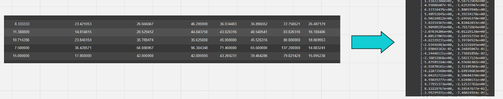
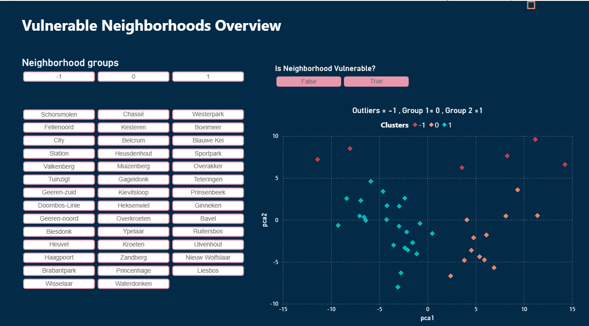
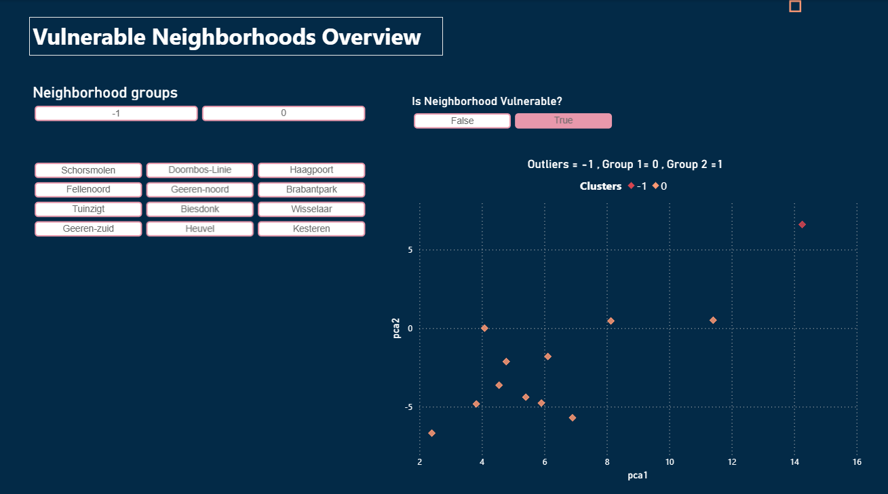

Raw datasets were collected from multiple sources and loaded into a GeoDataFrame. I conducted Exploratory Data Analysis (EDA) to identify patterns, handle missing values, outliers, and duplicates before continuing with the spatial clustering.
StandardScaler was used to scale the dataset to zero mean and unit variance. PCA was applied for dimensionality reduction, followed by Nearest Neighbors to understand spatial proximity for clustering readiness.

DBSCAN (Density-Based Spatial Clustering of Applications with Noise) is an unsupervised machine learning algorithm that groups together data points that are closely packed together, while marking outliers as noise. It does not require specifying the number of clusters in advance and works well for discovering clusters of arbitrary shape. DBSCAN requires two parameters: eps (maximum distance between two points in a cluster) and min_samples (minimum number of points required to form a dense region).
In the final stage, machine learning techniques are applied to uncover hidden patterns in the data. Using the PCA-transformed dataset, the three closest neighbors for each data point are determined using the Nearest Neighbors algorithm, revealing the local structure of the dataset. DBSCAN, a density-based clustering algorithm, is then used to group similar neighborhoods based on their characteristics and to identify noise points that do not fit into any cluster. Vulnerable neighborhoods are identified by comparing the resulting clusters with a predefined list of socio-economically challenged neighborhoods. A boolean column is added to the dataset to flag these vulnerable areas, transforming raw data into actionable insights and highlighting regions in Breda that may require targeted interventions.
After applying DBSCAN and identifying vulnerable neighborhoods, I built a Power BI dashboard to visualize the results and enable interactive exploration.

